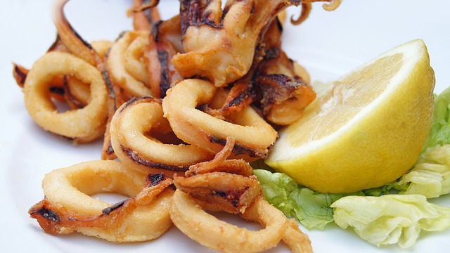
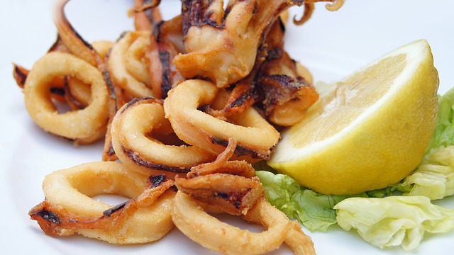

Ricas costillas asadas al horno con salsa barbacoa. Quedaran tiernas y jugosas con estos sencillos pasos
Ingredientes
Para 4 personas
2 Costillar
Ajo
Sal
Pimienta
Salsa barbacoa
Vino o cerveza
Cómo hacer Costilla al horno
Comenzaremos machacando en un mortero los ajos o bien si lo queremos muy menudo en una batidora de cuchillas, añadiendo el pimentón, el orégano y la pimienta. Echamos el aceite y mezclamos todo bien.
Pintamos con el adobo las costillas de cerdo por todas sus caras y las dejamos durante dos horas en la nevera bien tapadas.
Precalentamos el horno con calor arriba y abajo a 190 grados. Colocamos la carne en una fuente refractaria y la salamos
Horneamos durante media hora, le añadimos el vino blanco y seguimos horneando otra media hora más o hasta que veamos la carne ya se separa del hueso fácilmente
Solomillo a la pimienta
Jugoso filete de solomillo sazonado con unicamente sal y pimienta y unas patatas fritas
Ingredientes
Para 4 personas
2 filetes solomillo
caldo carne
nata
1/2 cebolla
Coñac
Cómo hacer solomillos de cerdo a la pimienta.
Sellamos los solomillos en la sarten
Preparamos un poco de pimienta en la sarten echamos la nata y ponemos los solomillos
Apartamos y ya los tendriamos
Pollo asado
Pollo asado sabroso y con bastante salsa
Ingredientes
Para 4 personas
1 pollo
·Sal
2 patatas
Perejil
Ajo
Cómo hacer un pollo asado al horno
Precalienta el horno a 180º con calor arriba y abajo. Mientras, limpia el pollo retirando los restos de plumas y excesos de grasa.
Mezcla en un bol la pimienta negra y la sal con 2 cucharadas de aceite y el zumo del limón. Remueve bien y una vez esté todo bien integrado, úntalo bien por todo el pollo hasta que quede bien embadurnado. Reserva el resto de mezcla para preparar su cama.
Corta las cebolletas en juliana y las patatas en rodajas de un centímetro. Sazona y salpimenta todo en conjunto con la mezcla que te ha sobrado. Unta aceite en una bandeja de horno y coloca los trozos de cebolleta y patata por encima.
Remueve bien todo para que quede bien sazonado y hazle un hueco en el centro. Coloca el pollo encima e introdúcele 2 ramitas de romero, un poco de tomillo y los ajos aplastados. Riega todo con un poco de agua (o si lo prefieres caldo, vino blanco o cerveza). Introdúcelo en el horno y ásalo unos 45-55 minutos aproximadamente.
Es importante que a mitad de cocción, remuevas la guarnición para que no se quede quede pegada o se queme. Sirve el pollo asado en un plato con su guarnición. Mezcla el jugo de la bandeja de horno con perejil picado y viértelo por encima. Adorna con otra ramita de romero

 
